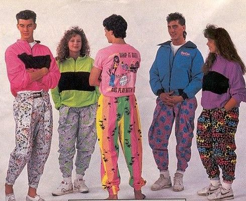
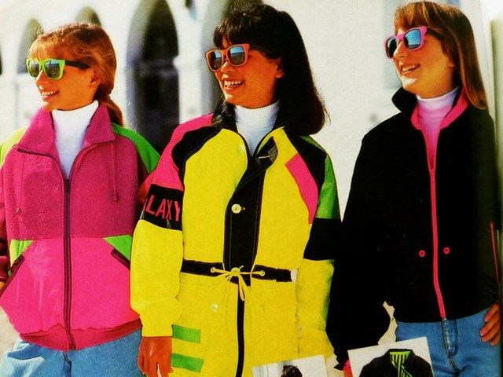
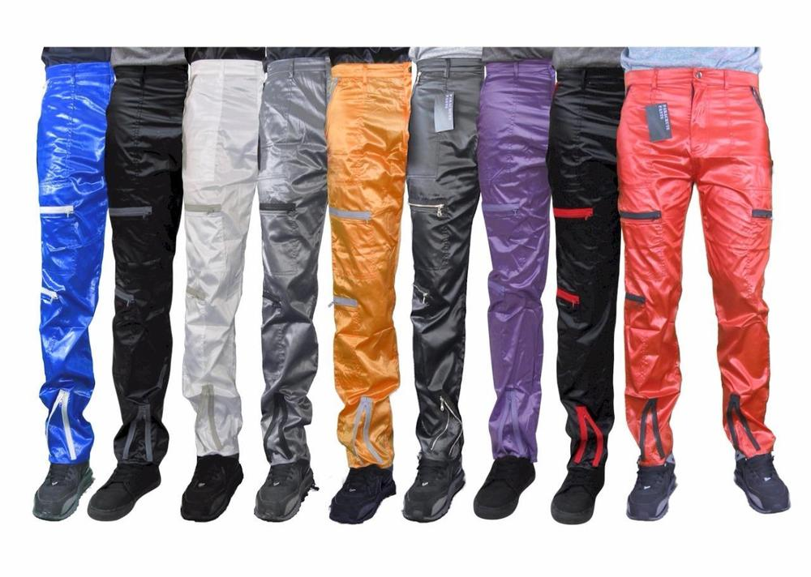
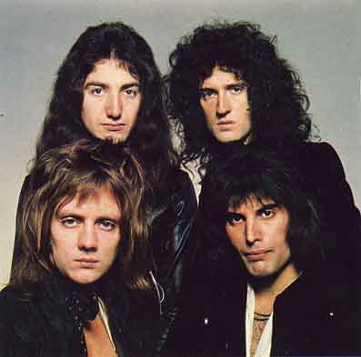
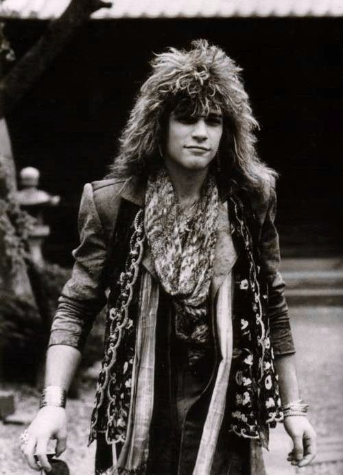

Clothing Hair and Makeup
The 80s without a doubt, will go down in history as the most interesting and creative decade of trends. In fact, to this day, many designers base their designs off of the clothing from 30 years ago. The decade was filled with colour and bizarre, yet normal at the time, outfit choices.
Flashy accessories like hoop earrings and bold sunglasses were a must. Most women wore things like leg warmers, neon leggings, fingerless gloves, parachute pants, shoulder pads, mini skirts, and oversized tops. Men, on the other hand, wore things like acid-washed jeans, denim jackets, designer jackets, casual t-shirts, and loafers. People in the 80s wore all sorts of things, from bright and colourful neon leggings to lace, black tops. Needless to say, 80s clothing was super diverse.
Some things worn were:
 One thing’s for sure, the 80s were almost the complete opposite of the 70s. 10 years before the 80s, almost everyone had straight, long, natural hair. In the 80s, things like teased hair and striking makeup was certainly going to help you fit in. Hair was curled, permed, coiffed and crimped and girls and guys wore bold, bright makeup - anything that would make you stand out. For their hair, people wore sweatbands, women wore giant teased hair and side ponytails, had perms and scrunchies in their hair, while guys had mullet and rat tail hairstyles. Meanwhile, those who makeup likely wore dark lip liner, eyeshadow up to their eyebrows and hot pink blush.
 